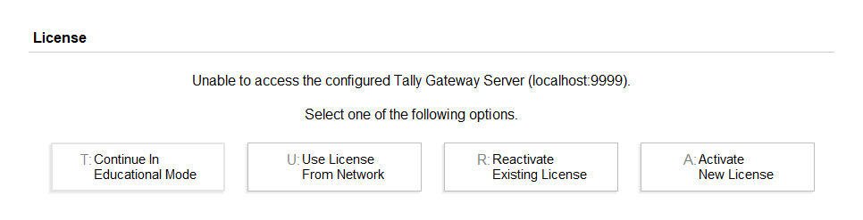

Tally is an Accounting Software that is a component of DFA Course.
DFA ( Diploma In Financial Accounting )
Tally performs the different types of task such as:-
1. To maintain the flow of cash ( Accounting ).
2. To transfer goods ( वस्तु ) ( Inventory ).
3. To maintain statutory & taxation. ( Tax related work )
4. Different types of voucher ( प्रमानक ) can be created.
5. To create payroll and attendance.
From beginning to current data we have different version of Tally.
| SN | Version | Year |
|---|---|---|
| 1. | Tally 4.5 | 1994 |
| 2. | Tally 5.4 | 1986 |
| 3. | Tally 6.3 | 2001 |
| 4. | Tally 7.2 | 2005 |
| 5. | Tally 8.1 | 2006 |
| 6. | Tally 9.0 | 2007 |
| 7. | Tally ERP - 9.0 | 2009 |
| 8. | Tally Prime | 9 Nov / 2020 |
• Peutronics was the first version of Tally, introduced in 1986.
• “Shyam Sundar Goenka” and Bharat Goenka” was the founder of Tally.
• In 1991 Tally Solution Private Limited company is Registered to sell their software it across the world.
• Present more then 100+ country’s use tally to maintain account.
• The Headquarter of Tally is in Bangalore ( India ).
1. Open any Web Browser such as Google Chrome, Microsoft Edge/ Bing , of Mozilla Firefox.
2. Visit the URL https://tallysolutions.com
3. To top right corner of web page we see two options :-
a. Download
b. Buy
It is a process to maintain the transaction(लेन देन) of any account and inventory.
A person who deals with account is called Accountant.
List of cash Transaction is called Account.
Any work that is done to gain (get) profit is called Business.
There are two types of Business.
a. Profession
A business in which Degree and registration required.
b. Occupation
A business in which Degree and registration not required.
A person or a company that invest (निवेस करना) the total amount to start up the Business is called Ownership.
There are three types of Ownership.
a. Proprietor ship (एकाअधिकारी)
b. Partnership ( साझेदार )
c. Share Holder ( अंसधारक )
All the available product of the company and its value associated(जुड़ा हुआ) with the company is called its Assets
or Capital(पूँजी).
There are two types of capital.
1. Direct Capital (current Assets)
2. Indirect Capital (fixed Assets)
Note:-
a. Fixed Assets does not effect the transaction flow.
b. Current Assets keep flowing in transaction and passes from one person to another.
There are three types of goods in a business.
a. Raw material
Goods before processing.
b. Processing Goods
A goods that is being process to get the final product.
c. Process Goods
A goods that is ready to sell.
An amount that is deducted from MRP is called Discount.
There are two types of Discounts.
a. Cash Discount (नगद छुट)
b. Trade Discount (व्यापारिक छुट)
An amount that is stored as a cash in hand after reducing the expense (खर्च) is called income.
Earning – Expense = Income
A person or a compony who provides an amount to the other person with certain condition is called Creditor.
A Person or a company who receive an amount from the other person with certain condition is called Debtor.
Example:-
a. Ram received ₹5000 from Rajesh.
[ Ram (Dr), Rajesh (Cr) ]
b. Ajay Paid ₹10,00 to Sonu.
[ Ajay (Cr), Sonu (Dr) ]
c. Received cash ₹3000 from Ajeet.
[ Ajeet(Cr), Cash Account (Dr) ]
d. Rajesh received ₹ 1000 .
[ Rajesh (Dr), Cash Account (Cr) ]
e. Received ₹ 3000 from Ajeet & ₹5000 from Mohit.
[ Ajeet,Mohit(Cr), Cash Account(Dr) ]
f. Paid electricity bill ₹ 1500 electricity bill .
[ Bill (Dr), Cash Account (Cr)]
Note:
Purpose will be Account in voucher.
Increasing cash Account will Debtor(Dr).
Decreasing cash Account will Creditor (Cr).
The time interval from 1st April to 31st March to maintain the transaction is called its Financial year.
Example:-
F.Y – 2021-2022
(1/04/2021-31/03/2022)
The date on which our business is being startup is called books beginning Date.
This date must lies between Financial Year.
It is the written document of any transaction as a proved.
There are 3 types of accounting.
An account related to name of any person of company.
Rule:-
Debit the Receive and credit the giver.
An account related to the name of an object.
Rule:-
Debit what comes in and credit what goes out.
An account related to the profit and loss.
Rule:-
Debit all the expense and lose and credit all the income & gain
1. Monu received ₹ 1000 from Sonu.
Monu A/C = Dr
Sonu A/C = Cr
2. Bought Furniture for ₹ 1500.
Cash A/C = Cr -It is going
Furniture A/C = Dr -It is coming
3. Paid water bill ₹ 1000.
Water bill = Dr
Cash A/C = Cr
The process of keeping record of all the transaction together in order of date is called Journal Entry.
In Journal Entry, All the transaction of all nature are kept together.
Note:-
The process of maintaining transaction separately of all the Ledger (Account) is called “Ledger Posting”.
| Date | Particular | LF | Debit(dr) | Credit(Cr) |
|---|---|---|---|---|
Narration:- |
1. In Date column, we just write Date & Month of transaction.
2. In Particular column, we write the name of effected account followed by debit up and credit down.
To the bottom area of particular column, we write the reason of transaction, called Narration.
3. LF = (Ledger Folio) column is used to write the voucher number of previous transaction.
4. The debited amount and credited amount are written in respective columns.
1. Identity the effected accountant in the transaction and then identity its types.
2. Apply the rules of accounting to their types.
3. Identity debit and credits.
1. Paid ₹ 5000 to Mohan for Rent on 1 Aug
| Date | Particular | Debit(dr) | Credit(Cr) |
|---|---|---|---|
| 1/8 |
Mohan A/C (Dr) Cash A/C (Cr) (Paid rent) |
5,000 | 5,000 |
2. Received ₹ 3,000 from Naresh of 1 May.
| Date | Particular | Debit(dr) | Credit(Cr) |
|---|---|---|---|
| 1/5 | Cash A/C (Dr) Naresh A/C (Cr) |
5,000 | 5,000 |
• If we start any business than invested amount is called its capital.
In case of starting the business two Account(A/C) is effected.
1. Capital A/C (Account)
2. Cash A/C (Account) or Bank A/C (Account)
Example: -
1. Started a business by investing ₹ 70,00 on 1 April.
Capital A/C (Cr)
Cash A/C (Dr)
| Date | Particular | Debit(dr) | Credit(Cr) |
|---|---|---|---|
| 1/4 | Cash A/C (Dr) Capital A/C (Cr) |
70,000 | 70,000 |
2. Ajeet started a business with Mahesh by investing ₹ 50,000 each.
Cash A/C (Dr)
Ajeet A/C (Cr)
Mahesh A/C (Cr)
| Date | Particular | Debit(dr) | Credit(Cr) |
|---|---|---|---|
| 1/4 | Cash A/C (Dr) Ajeet A/C (Cr) Mahesh A/C (Cr) ( Simple Buisness as a partenership.) |
1,00,000 | 50,000 50,000 |
Q. View the following transaction and create the Journal entry in one table.
1. Started a business by investing ₹ 1,00,000 on 1st June.
2. Deposited ₹ 30,000 in SBI Account on 2nd June.
3. Paid ₹ 10,000 (cash) as house rent to Rohit on 5th June.
4. Purchase goods of ₹ 20,000 from Aditya on 1st July.
5. Issued (देना) a checked of ₹ 30,000 SBI rupees to Aditya and ₹ 20,000 (cash).
| Date | Particular | Debit(dr) | Credit(Cr) |
|---|---|---|---|
| 1/6 | Cash A/C (Dr) Capital A/C (Cr) ( Start a Business) |
1,00,000 | 1,00,000 |
| 2/6 | SBI A/C (Dr) Cash A/C (Cr) (Deposited in SBI) |
30,000 | 30,000 |
| 5/6 | Rohit A/C (Dr) Cash A/C (Cr) (Rent Paid) |
10,000 | 10,000 |
| 1/7 | Aditya A/C (Dr) Cash A/C (Cr) (Purchase goods) |
20,000 | 20,000 |
| 1/8 | Aditya A/C (Dr) SBI A/C (Cr) Cash A/C (Cr) (Paid to SBI) |
50,000 | 30,000 20,000 |
Q. Started a business with ₹ 50,000 on 15 April after 3 days Aryan joined the same business by investing ₹ 70,000 on 1st May ₹ 1,00,000 is Deposited in SBI and on next day ₹ 30,000 is transferred to PNB.
Purchased Goods of ₹ 30,000 and paid Electricity bill ₹ 10,000 of 2nd June received Bonus ₹ 1,000 and withdraw all amount from Bank.
| Date | Particular | Debit(dr) | Credit(Cr) |
|---|---|---|---|
| 15/4 | Cash A/C Capital A/c (Start a Business) |
50,000 | 50,000 |
| 18/4 | Cash A/C Aryan's Cap A/C (Join the business as Partnership) |
70,000 | 70,000 |
| 1/5 | SBI A/C Cash A/C (Deposited) |
1,00,000 | 1,00,000 |
| 2/5 | PNB A/C SBI A/C (transfer) |
30,000 | 30,000 |
| 3/5 | Goods A/C Electricity A/C Cash A/C |
30,000 10,000 |
40,000 |
| 4/5 | cash A/C Bonus A/C |
1,000 | 1,000 |
| 5/5 | Cash A/C SBI A/C PNB A/C (Total Balance) |
1,00,000 | 70,000 30,000 |
After downloading the Tally Application we get 3 options during Installation.
To change the name and installation path of Tally application.
Press [ C ] on keyboard for Configure.
This options can be used only if configure options is not given.
Press [ O ] on keyboard for More Action.
To install the application according to the select path and name of application.
Press [ I ] on keyboard for Install.
Note:-
To install this application Tally Prime in our System ( PC ) Our system must be 64 Bit and at least 2GB RAM .
After successful installation of Tally, There are four different options.

This mode is generally used by us for learning purpose.
It does not require any Activation and work as same as original software except Data Change.
This option can be used only in Gold Edition of Tally.
Using this option, a System (PC) can be connect to the other(PC) with the help of server Network.
Note:-
This option of Tally is generally used by Multinational compony whose different Branches are located at different places.
This option is used only if we have activated the Tally Prime Earlier, & we wish to Activate this application again.
It is used to activate the original version of Tally by writing Activation key, Serial No. & Registered Email Id.
Note:
Activation key and Serial Number is obtained after purchasing the product from official Website of Tally.
There are two modes of Tally
1. Silver ( For single User)
2. Gold/Golden ( For multi User )
To the left side of title-bar The version of Tally is displayed.
To the right side 3 symbols are given as earlier.
a. Minimize
b. Maximize
c. Close
There are 9 menu in the Menu Bar to perform different task.
a. Compony Menu [ Alt + K ]
b. Data Menu [ Alt + Y ]
c. Exchange Menu [ Alt + Z ]
d. Go to Menu [ Alt + G ]
e. Import Menu [ Alt + O ]
f. Export Menu [ Alt + E ]
g. Email Menu [ Alt + M ]
h. Print Menu [ Alt + P ]
i. Help Menu [ F1 ]
To the left side of screen, a list of all the opened company is displayed.
The active company name is displayed to the top of the list.
Just above the active company current period of company is displayed .
Any transaction of the company can be done within current period.
Note:-
To change the current period, we press [ Alt + F2 ].
The date on which voucher is created is called current date.
It can be change by pressing [ F2 ].
It is the main screen of Tally Application from where all the Transaction related work can be done.
After Selecting any options, of GOT, its related options are displayed to the right side of screen.
When we open Tally for 1st Time, we see 3 important options.
This option is used to create a New Compony in Tally Prime by following steps: -
a. Compony Data Path
b. Company Name & Address
c. Contact Info Such as Mobile No, Email id, Website, Fax No etc.
d. Financial Year and Books Beginning Date.
e. Currency of the Compony.
a. To open the existing compony by writing the directory path as
D:\Raj\vctc
• Folder inside folder is called subfolder.
This option also helps to open the compony by selecting the Drive name.
There are different options in this menu. That helps to perform the compony related work.
To create a new compony without closing the previous compony.
To modify the details of created compony.
Note: -
The path of compony cannot be changed by alter option.
To close the created compony.
This option is used to open the existing compony by writing the path name or selecting the Directory/Folder.
To change the active compony of Tally.
The active compony can also be changed by just clicking on compony name from list of compony.
To delete any compony open alternation windows and press [ alt + D ]
Using this option we can provide password in the compony by following method.
1. Select security option from compony menu.
2. Write ‘yes’ and then write the user name, password, email id.
3. Finally press [ ctrl + A ]